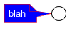

@startuml
!if %not(%variable_exists("$FGCOLOR"))
!$FGCOLOR = "black"
!endif
!if %not(%variable_exists("$BGCOLOR"))
!$BGCOLOR = "white"
!endif
' Had to find a link color that worked for both light and dark
' backgrounds until this is solved: https://forum.plantuml.net/14940/granular-hyperlinkcolor
!if %not(%variable_exists("$HYPERLINK_COLOR"))
!$HYPERLINK_COLOR = %darken("#30C8B4", 10)
!endif
!if %not(%variable_exists("$HYPERLINK_UNDERLINE"))
!$HYPERLINK_UNDERLINE = "true"
!endif
!$DARK_BG = %lighten("#565656", 5)
skinparam UseBetaStyle true
<style>
root {
BackgroundColor $BGCOLOR
FontColor $FGCOLOR
HyperLinkColor $HYPERLINK_COLOR
LineColor $FGCOLOR
}
note {
FontColor white
BackgroundColor blue
LineColor red
}
</style>
note left
blah
endnote
@enduml